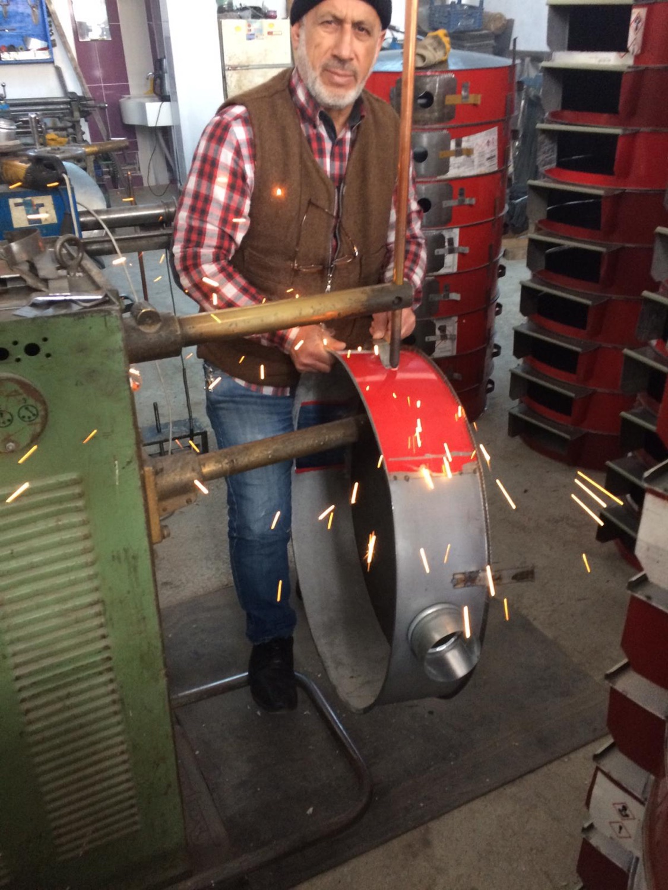

Atacan Mangal Soba1947’den
1947’den
bugüne.
Gaziantep’te başlayan üretim yolculuğumuz ve bugün de sürdürdüğümüz işçilik anlayışımız.
Atacan Mangal SobaBir şehrin
Bir şehrin
üretim
hafızasından.
Atacan Mangal ve Soba olarak hikâyemizi 1947’den bugüne taşıyoruz. Mangal, ocak, sac tava, semaver, soba, soba aksesuarları, kebap şişleri ve teneke kutular dahil geniş bir ürün yelpazesini kendi bünyemizde üretiyoruz.
Ürünlerimizi bu sitede inceleyebilir, ihtiyacınız olan bilgi için doğrudan bizimle iletişime geçebilirsiniz.
Ürünlerimizi görün
Kaynak sitedeki üretim fotoğrafı
01 / ÜRETİM
Kendi bünyemizde
Kaynak sitede yer aldığı gibi, ürünlerimizi kendi üretim yapımız içinde hazırlıyoruz.
02 / ÇEŞİTLİLİK
Birçok kullanım alanı
Mangal, soba, semaver, ocak ve tamamlayıcı ürünlerle farklı ihtiyaçlara yanıt veriyoruz.
03 / İLETİŞİM
Doğrudan temas
Ürün seçimi ve detaylar için Atacan ile telefon, e-posta veya WhatsApp üzerinden görüşebilirsiniz.
Atacan
Yerli üretimde
hep daha ileriye.
Kaynak sitemizde yer alan üretim yaklaşımımız.
Bizimle iletişime geçin